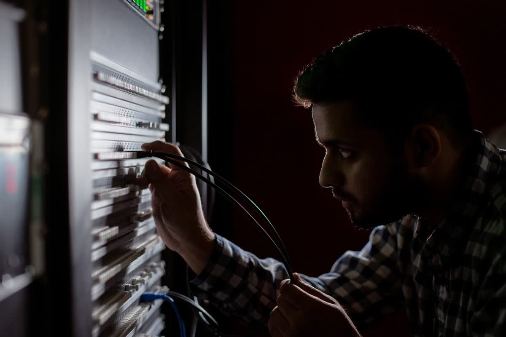

Celah keamanan yang belum diketahui pada aplikasi dan infrastruktur.
Cybersecurity & Infrastructure
Infrastruktur yang aman dan tangguh di cloud, jaringan, dan data center.

Yang kami bantu selesaikan
Minimnya visibilitas atas kejadian keamanan dan respons insiden yang lambat.
Infrastruktur lama yang mahal dioperasikan dan sulit dikembangkan.
5 layanan
Cybersecurity Assessment & Penetration Test
Temukan dan prioritaskan celah sebelum penyerang menemukannya.
- Vulnerability assessment
- Penetration testing web, mobile & API
- Review konfigurasi jaringan & cloud
- Laporan remediasi & retest
Security Operations Center (SOC)
Pemantauan, deteksi, dan respons yang berkelanjutan.
- Pengumpulan log & setup SIEM
- Use case deteksi & tuning
- Playbook respons insiden
- Laporan keamanan berkala
Cloud Computing & Cloud Migration
Rencanakan dan jalankan perpindahan yang aman ke cloud atau hybrid.
- Asesmen beban kerja & biaya
- Desain landing zone & arsitektur
- Eksekusi migrasi bertahap
- Optimasi setelah migrasi
Network & Infrastructure Engineering
Jaringan, server, dan infrastruktur data center yang andal.
- Desain & implementasi jaringan
- Server & virtualisasi
- Infrastruktur data center
- Review performa & kapasitas
Data Protection, Backup & Disaster Recovery
Lindungi data penting dan pulihkan saat terjadi masalah.
- Kebijakan & arsitektur backup
- Desain situs disaster recovery
- Penetapan RTO/RPO
- Uji pemulihan & simulasi
Yang Anda dapatkan
Gambaran risiko keamanan yang jelas dan terprioritaskan, beserta cara memperbaikinya.
Pemantauan berkelanjutan dengan prosedur respons yang jelas.
Infrastruktur yang dirancang sesuai beban kerja saat ini dan rencana ke depan.
Backup dan pemulihan teruji sesuai target pemulihan yang disepakati.
Cara kami bekerja
01
Temukan
Memperjelas tujuan, proses saat ini, batasan, dan kriteria keberhasilan bersama pemangku kepentingan Anda.

02
Kaji
Meninjau sistem, data, dan infrastruktur yang ada untuk menemukan titik awal yang realistis.
03
Rancang
Menetapkan arsitektur, ruang lingkup, tahapan, dan kriteria penerimaan sebelum pengembangan dimulai.

04
Bangun & integrasikan
Pengerjaan bertahap dengan review rutin, sehingga progres dapat dicek sejak awal.
05
Operasikan & tingkatkan
Serah terima dengan dokumentasi dan pelatihan, lalu dukungan dan penyempurnaan solusi.
Di mana digunakan
Studi kasus
Proyek contoh — hanya menunjukkan format, bukan pekerjaan nyata MIT.
Kesehatan & Rumah Sakit · Cybersecurity & Infrastructure
Asesmen keamanan dan penerapan pemantauan berkelanjutan
<15 menitdari peringatan hingga triase
Perbankan & Jasa Keuangan · Cybersecurity & Infrastructure
Migrasi hybrid cloud dengan disaster recovery yang teruji
40+aplikasi dimigrasikan dalam gelombang terencana

Pendidikan & Universitas · Cybersecurity & Infrastructure
Desain ulang jaringan kampus dan penguatan keamanan
12gedung dalam satu jaringan terkelola
Pertanyaan
Apakah penetration test mengganggu operasional?
Ruang lingkup, waktu, dan metode pengujian disepakati tertulis sebelumnya, dan pengujian dapat dijadwalkan untuk meminimalkan dampak pada sistem produksi.
Bisakah bekerja dengan tools keamanan yang sudah kami miliki?
Bisa. Asesmen dimulai dari apa yang sudah ada; rekomendasi berfokus pada celah, bukan mengganti tools yang sudah berfungsi.
Apakah semuanya harus pindah ke cloud?
Tidak. Banyak organisasi menjalankan lingkungan hybrid. Asesmen menentukan beban kerja mana yang diuntungkan bila dipindahkan dan mana yang sebaiknya tetap.